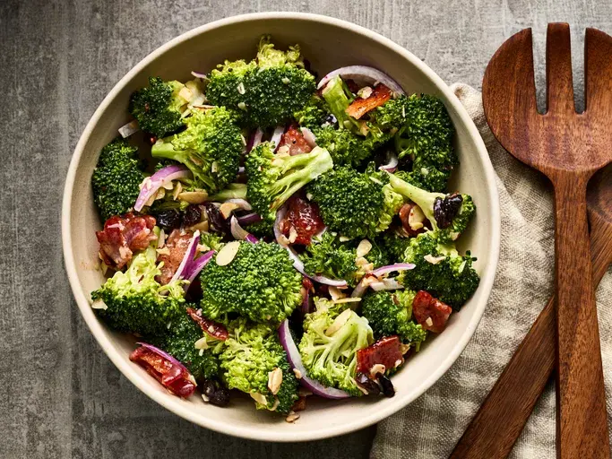

Salad

Description
A salad is a refreshing dish made from a variety of fresh vegetables,
often tossed with a light dressing. It’s a healthy option that can be
enjoyed as a side or a main dish.
Ingredients
- 1 cup mixed greens (lettuce, spinach, etc.)
- 1/2 cucumber, sliced
- 1 tomato, chopped
- 1/4 cup shredded carrots
- Salad dressing (optional)
Steps
- Combine mixed greens, cucumber, tomato, and carrots in a bowl.
- Drizzle with your favorite salad dressing.
- Toss gently to combine.
- Serve immediately.